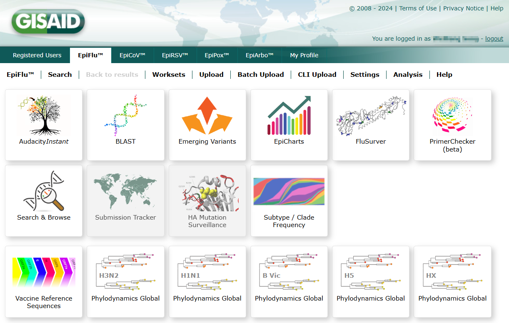
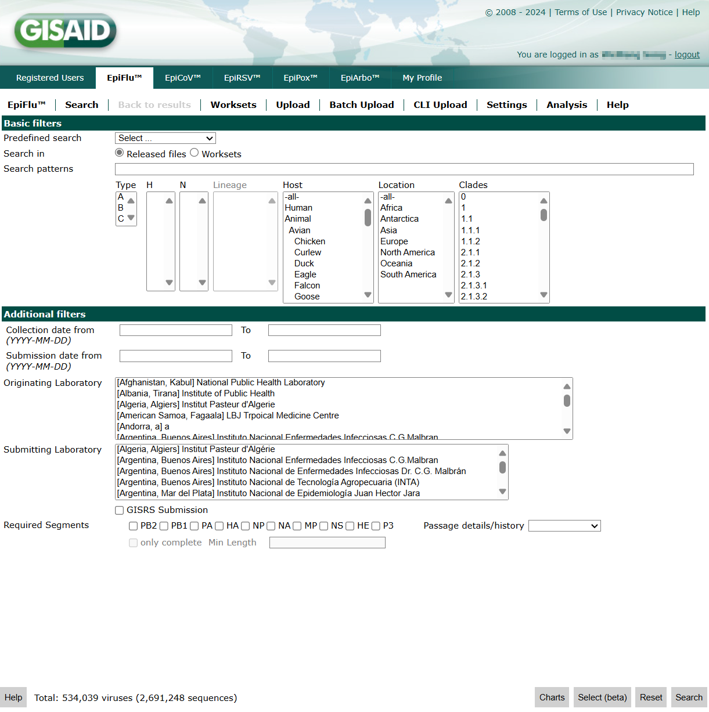
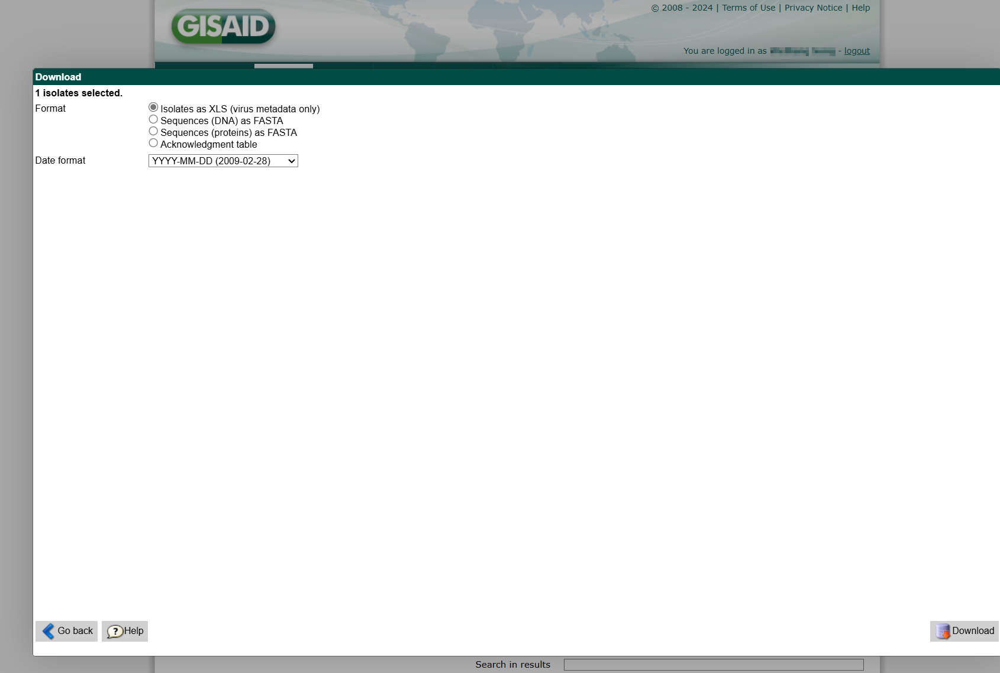

基本规则
- sid: session id, 在一次会话中保持不变
- wid: window id，平铺窗口共享同一个 wid，弹出的上层窗口（如下载）使用不同的 wid
- pid: page id，页面 id，更换检索条件会变化
- cid: component id，组件 id，许多函数需要传入 cid
- ceid: component event id，作为请求参数使用
- ts: time stamp
GISAID 获取参数依赖 POST 或 GET 请求。常将函数命令连接为 pipeline，转化为请求参数发送给服务器，在响应中包含目的页面的 pid，或页面的 HTML
获取数据展示在 result page 的GetData，系统限制一次最多访问 27 条数据，超出这个数字的需要分 batch 获取
动态 pid 案例
分析 browse page 到 result page 的流程，发现会调用search, GetData, GoBack三个命令，其中在两次检索中，browse page 的 pid 保持不变，而 result page 的 pid 会变化
{"queue":[{"wid":"wid_sf13al_7vm3","pid":"pid_sf13al_8ttf","cid":"c_sf13al_14b","cmd":"search","params":{},"equiv":null}]}
{"queue":[{"wid":"wid_sf13al_7vm3","pid":"pid_sf13al_95tz","cid":"c_sf13al_14h","cmd":"GetData","params":{}}]}
{"queue":[{"wid":"wid_sf13al_7vm3","pid":"pid_sf13al_95tz","cid":"c_sf13al_14j","cmd":"GoBack","params":{},"equiv":null}]}
{"queue":[{"wid":"wid_sf13al_7vm3","pid":"pid_sf13al_8ttf","cid":"c_sf13al_14b","cmd":"search","params":{},"equiv":null}]}
{"queue":[{"wid":"wid_sf13al_7vm3","pid":"pid_sf13al_9646","cid":"c_sf13al_14h","cmd":"GetData","params":{}}]}
{"queue":[{"wid":"wid_sf13al_7vm3","pid":"pid_sf13al_9646","cid":"c_sf13al_14j","cmd":"GoBack","params":{},"equiv":null}]}
分析 result page 到 download page 的流程（以选择 protein 为例），发现会调用Download, ShowProteins, Cancel三个命令，其中在两次唤起下载面板中，result page 的 pid 保持不变，而 download page 的 pid 会变化。注意，两次打开 download page 时，对应的上层 wid 也变了，而 cid 和 ceid 不变
{"wid":"wid_sf13al_7vm3","pid":"pid_sf13al_9cxb","cid":"c_sf13al_14j","cmd":"Download","params":{},"equiv":null}
{"wid":"wid_sf13al_9cxt","pid":"pid_sf13al_9cxu","cid":"c_sf13al_14m","cmd":"ShowProteins","params":{"ceid":"ce_sf13al_dm"},"equiv":null}
{"queue":[{"wid":"wid_sf13al_9cxt","pid":"pid_sf13al_9cxu","cid":"c_sf13al_14m","cmd":"Cancel","params":{},"equiv":null}]}
{"wid":"wid_sf13al_7vm3","pid":"pid_sf13al_9cxb","cid":"c_sf13al_14j","cmd":"Download","params":{},"equiv":null}
{"wid":"wid_sf13al_9d1x","pid":"pid_sf13al_9d1y","cid":"c_sf13al_14m","cmd":"ShowProteins","params":{"ceid":"ce_sf13al_dm"},"equiv":null}
{"queue":[{"wid":"wid_sf13al_9d1x","pid":"pid_sf13al_9d1y","cid":"c_sf13al_14m","cmd":"Cancel","params":{},"equiv":null}]}
函数细节
gisflu.login()
- 登录 GISAID
- 进入 browse page 并解析元素 id
- 不做任何参数筛选，进入 result page 并解析元素 id。此时 result page 包含所有 records，选择一个临时记录，获取 download page 的 id
- 进入 download page 并解析元素 id
- 返回 browse page。如果没有该步骤，后续构造的请求会返回空值
gisflu.search()
- 在 browse page 传入参数搜索
- 进入 result page，获取 records 的 json，转为 pandas 格式
- 返回 browse page。如果没有该步骤，后续构造的请求会返回空值
gisflu.download()
- 在
gisflu.login()登录后即可使用，不需要预先调用gisflu.search() - 根据
isolateIds下载 - 不做任何参数筛选，进入 result page 并解析元素 id
- 勾选需要的
isolates - 进入 download page，选择下载
metadata, protein, dna - 设置 fasta header
- 获取下载链接
- 保存到本地
页面介绍
访问https://platform.epicov.org/epi3/frontend后，首先进入 login page
登录后进入 first page，默认为 EpiCoV 数据库

通过导航栏切换到 Flu 数据库，进入 home page

点击Search进入 browse page

设置 filter 条件，点击Search进入 result page

勾选需要下载的 records，点击Download进入 download page。该页面通过 Overlap Window 呈现

待办
- 重构
buildDownloadCommand，应用到gisflu.login()和gisflu.login()